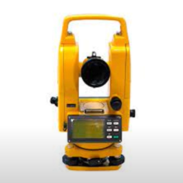
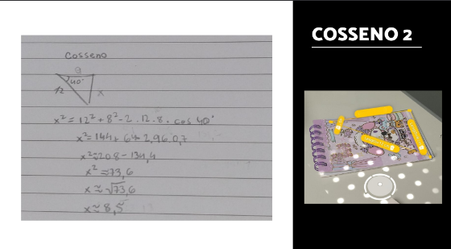
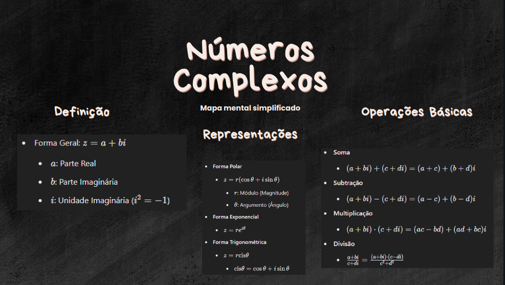

Construção do Teodolito
Realizamos essa atividade para aplicar a lei do seno e cosseno, utilizando um teodolito que contruímos e criando um vídeo detalhando o processo de cálculo
Lei de Seno e Cosseno
Realizamos essa atividade para aplicar a lei do seno e cosseno, utilizando um aplicativo para medir os lados e ângulo internos de objetos
Números complexos
Mapa mental sobre números complexos